- Site
- Rio Marina, Elba, Italy
- Studio
- Syracuse University Florence program, Fall 2023, with Luca Ponsi
- Team
- Yiting Zhong, Yicheng Wang, Sansiri Saensopa
- My part
- Concept and models with the team; later redrew most of the drawings on this page for the portfolio
A speculative Rio Marina where tourism has become the only economy. Residents rent their homes to visitors for the season and move into makeshift extensions hidden behind false facades.
This page is told twice. You arrive as a visitor.
A Tuscan harbor town, just as you imagined it.
Sunny beaches, quiet coves and narrow streets of painted houses. Walk the lanes of the old mining town, then end the day by the harbor.
Placeholder posters built from existing images. Town-view renders and "happy residents" images to come.
Island brands on every corner.
Fictional brand names to be decided.
Every room is ready for you.
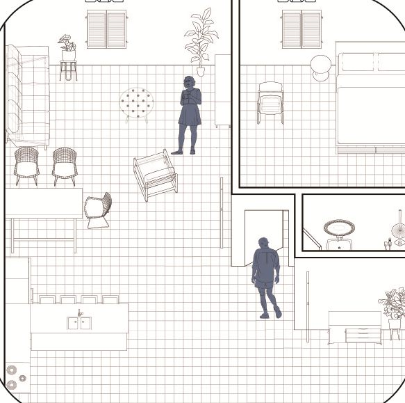
Enjoyed your stay?
The hosts live somewhere else.
Meanwhile, at the residents' table
The town plans its own performance. Residents agree to keep the old facades, replace scattered shops with chains and island brands, block off the alleys where they now live, and turn windows into secret doors.
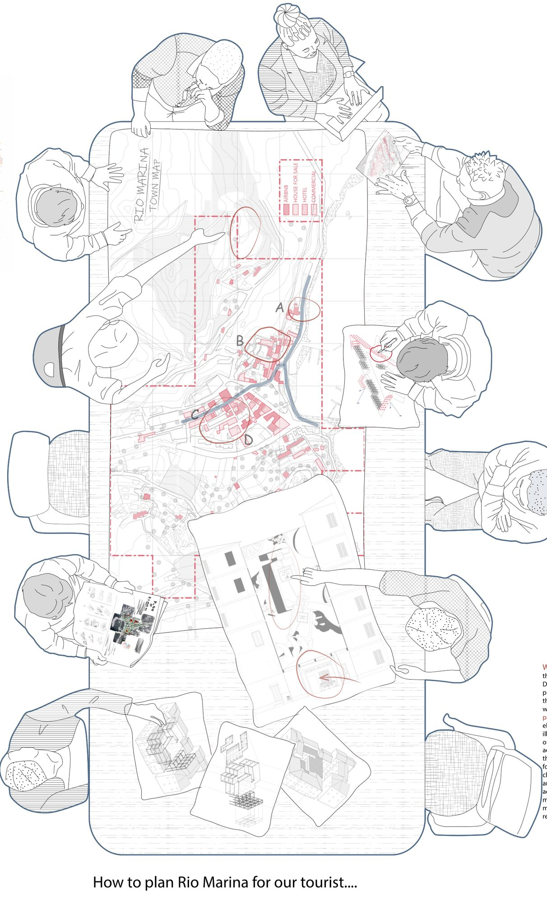
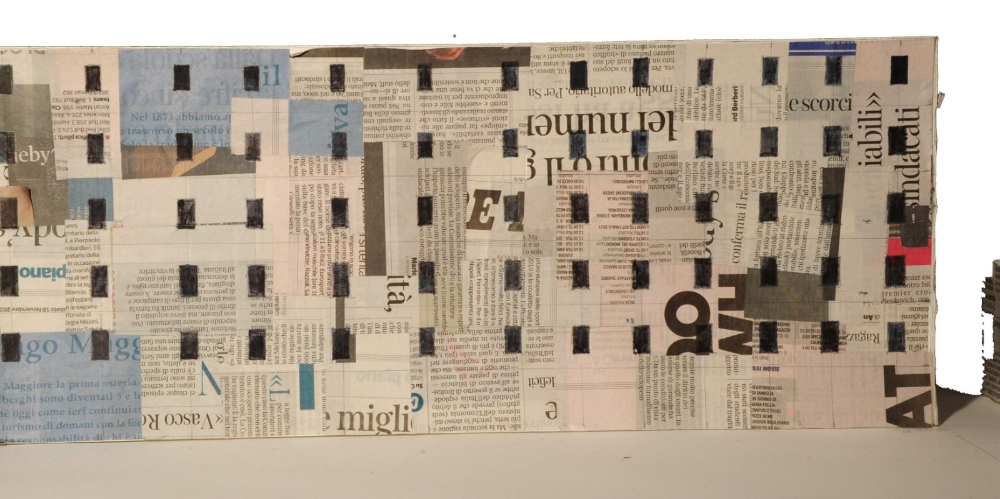
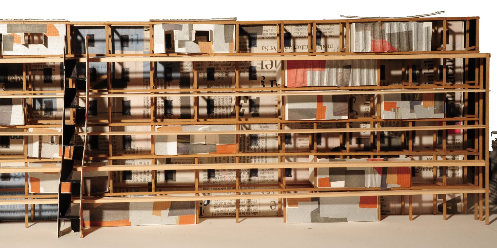
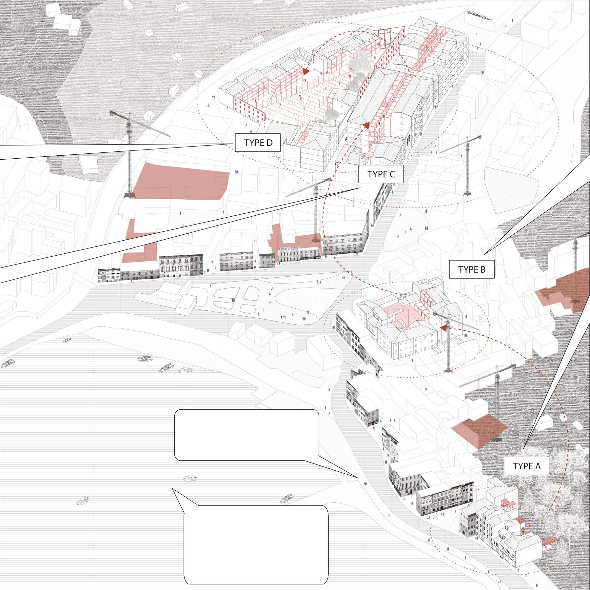
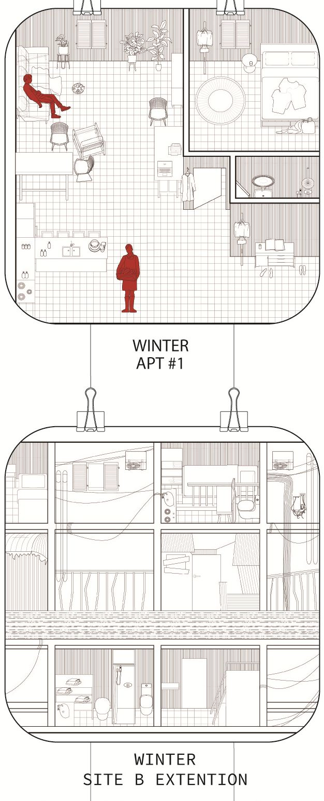
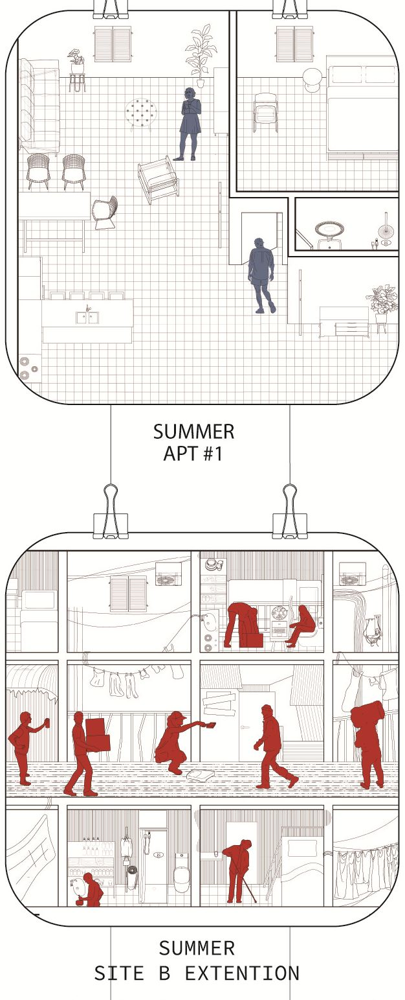
Off season
Off season. Residents live in their own apartments. The extension behind the facade stands empty.
High season. Guests (blue) take over the apartment; residents (red) move into the extension and build corridors between the rooms.
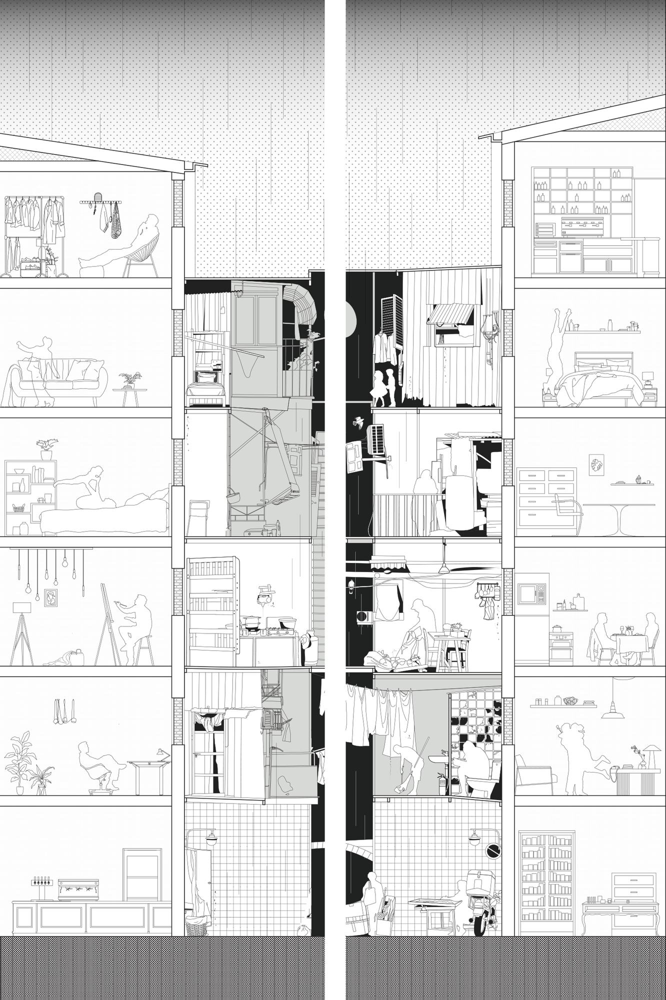
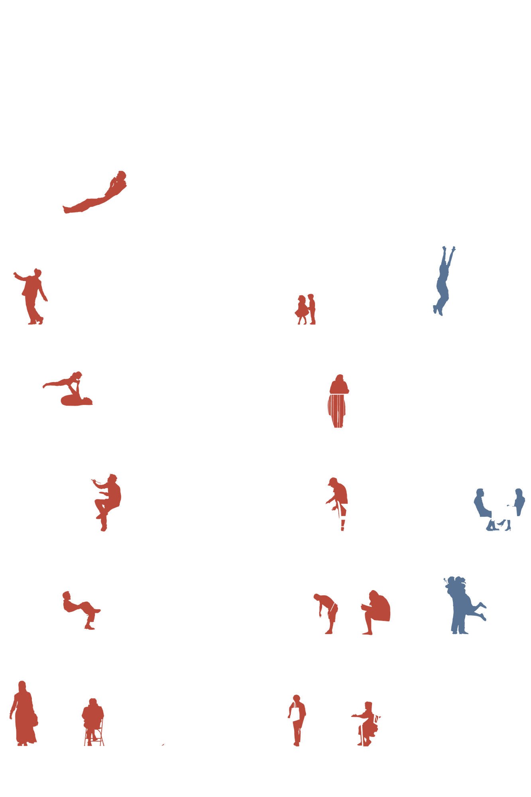
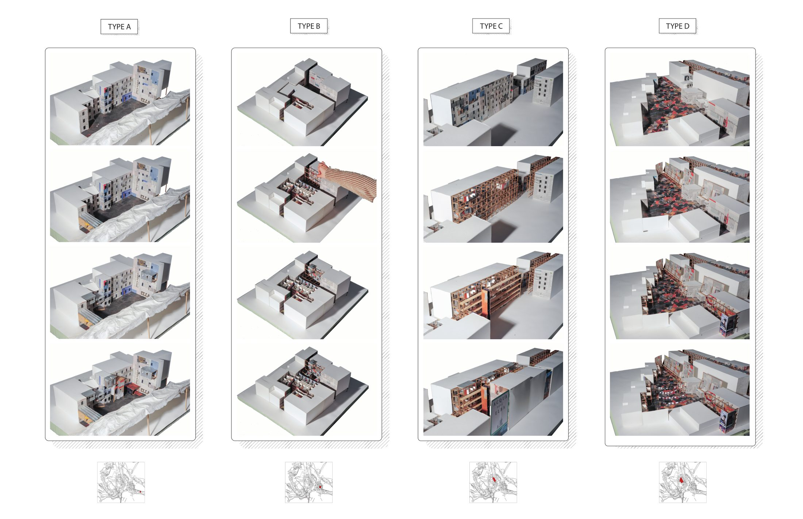
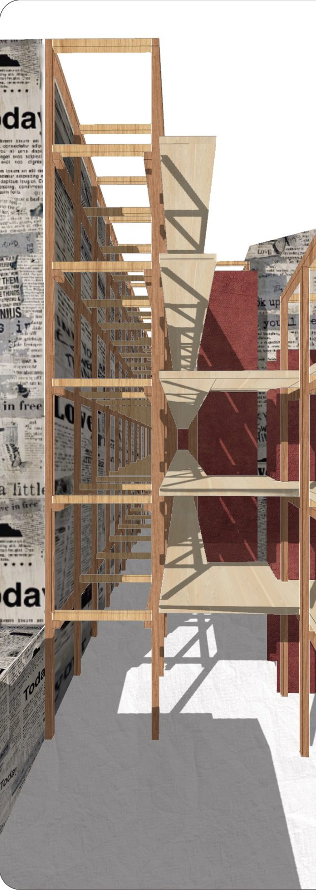
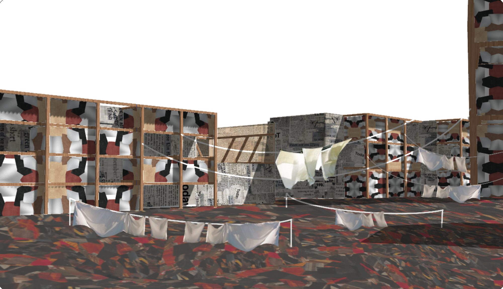
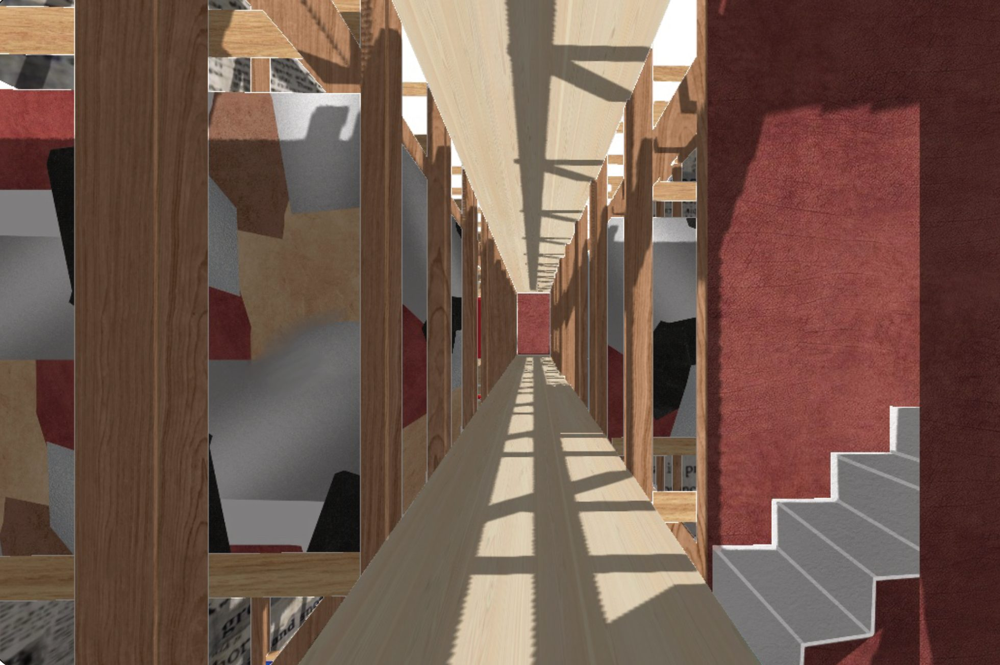
You have seen both sides.
Now, out of character.
How it started
On a trip to Elba we took a wrong turn and found ourselves in a residents' alley: laundry overhead, doors open, a side of the town that was clearly not meant for us. That moment of being somewhere we were not supposed to be became the starting question.
We looked at places built to be looked at: Wuzhen, the water town rebuilt and run as a single attraction; Disneyland, where service happens out of sight; and border villages built as facades to be seen from the other side.
Closer to home
In Florence I lived with a host family: a couple and their three children, close to my own age. Two students were placed with them, each with a private room and a bathroom to ourselves. It took me two months to notice how the family slept. The parents shared a room with their daughter; the two sons slept in the living room on folding mattresses that disappeared every morning.
Nothing was hidden on purpose. It was simply arranged so the guests would never see it.
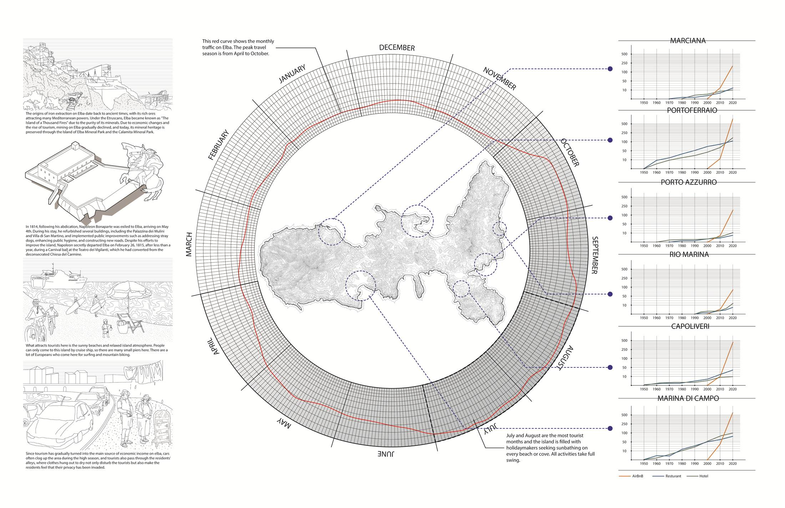
What the project asks
The scenario is deliberately extreme. It is not a proposal for Rio Marina but a way to make visible a trade that tourist towns already make: income in exchange for privacy, space and the right to be seen as you are.
Where does living end and performing begin, in a place devoted entirely to tourism?